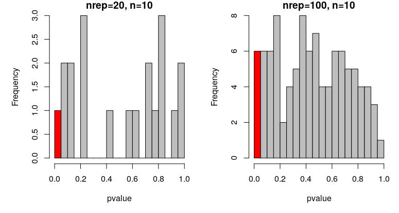
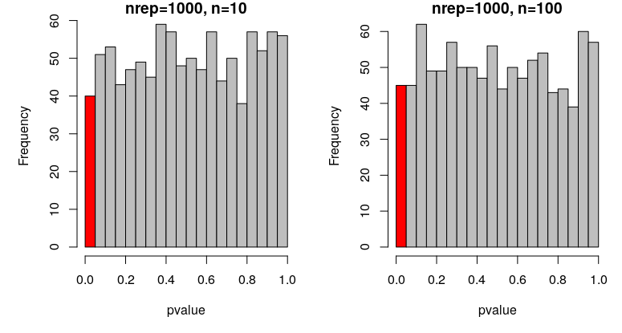

Using simulations to check alpha
In most quantitative sciences we accept a type 1 error rate of “0.05”, which is often called the alpha or significance level. This value tells us the probability of rejecting the null hypothesis (i.e. of finding an effect) given that the null hypothesis is true.
In other words, if there is no true effect (e.g. no difference between two groups), we would expect our null hypothesis of no effect to be rejected (incorrectly), alpha% of the time.
If you draw from the same normal distribution twice, will the mean of the two samples differ significantly in 5% of the cases?
YOUR TURN:
Figure out how to do a t-test in R
Generate two vectors of 10 values drawn from N(0,1) and compare them with a t-test
Figure out how to extract the p-value from that object (explore your R object with the functions str or names)
Write a function simT that generates two vectors of n values drawn from a N(0,1), compare them with a t-test and return the p-value
Repeat with nrep=20 and draw a histogram for n=10
Repeat with nrep=100 and draw a histogram for n=10
p-values of t-tests comparing means from 20 or 100 sims N(0,1) with n=10

In the first case, where nrep = 20, we expect 1 out of the 20 tests to be significant (5%). In my case, I did! How many did you get?
In the second case, where nrep = 100, we expect 5 out of the 100 tests to be significant. In my case, I got 6. How many did you get?
Are those deviations meaningful? Significant?
YOUR TURN:
Plot the output of the function simT with nrep=1000 and n=10
Plot the output of the function simT with nrep=1000 and n=100
p-values of t-tests comparing means from 1000 sims N(0,1) with n=10 or n=100

In both cases, we expect 50 out of the 1000 tests to be significant by chance (i.e. with a p value under 0.05). In my simulations, I get 40 and 45 false positive results, for n=10 and 100, respectively. How many did you get?
These proportions are not signicantly different from 5%.
prop.test(45, 1000, p = 0.05, alternative = "two.sided", correct = TRUE)
1-sample proportions test with continuity correction
data: 45 out of 1000, null probability 0.05
X-squared = 0.42632, df = 1, p-value = 0.5138
It is important to note that, although alpha = 0.05 is commonly used, this is an arbitrary choice and you should consider what is an appropriate type 1 error rate for your particular investigation.
Altough it isn’t necessary to check that a statistical analysis as simple as a t-test does not yield more than 5% of false-positive results, when the structure of the data is complex and analysed with more advanced models (e.g. when explanatory variables are mathematically linked to each other, and are combined in a mixed-effect models), this may allow to compare different modelling approach and select the one that does not produce more than 5% false positive results.
Such complex example where simulations is the only viable approach to construct a statistical model that does not lead to spurious effects can be found in this paper: * Ihle, Malika, et al (2020). “Measuring Up to Reality: Null Models and Analysis Simulations to Study Parental Coordination Over Provisioning Offspring.” Frontiers in Ecology and Evolution. https://doi.org/10.3389/fevo.2019.00142